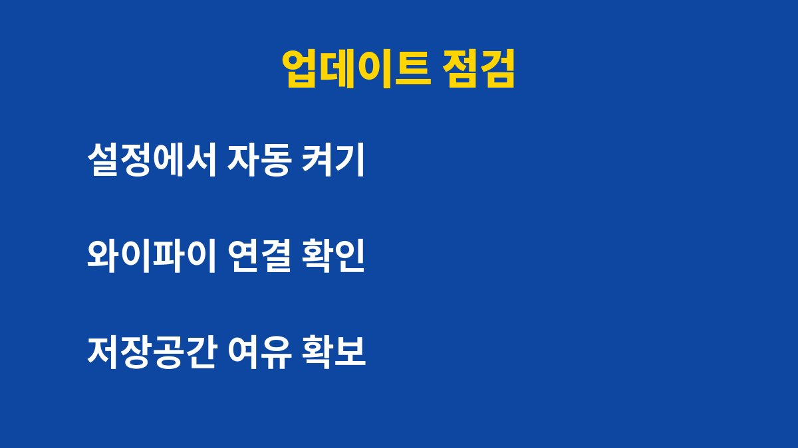

보안 업데이트를 미루면 이미 공개된 취약점이 그대로 열려 있는 상태로 폰을 쓰게 된다. 알림을 몇 번 넘겨 본 적이 있다면 지금 상태를 꼭 확인해야 한다. 그런데 업데이트를 끄는 것보다 더 위험한 습관이 따로 있다. 이유는 아래에 있다.
보안 업데이트는 기능을 추가하는 작업이 아니라 이미 알려진 구멍을 막는 작업이다. 제조사와 운영체제 회사는 취약점이 발견되면 패치를 내놓고 공개한다. 패치가 공개되는 순간 공격자도 어떤 구멍이 있었는지 알게 된다. 업데이트하지 않은 폰은 구멍이 알려진 채로 남는다.
그래서 업데이트 알림은 귀찮은 광고가 아니라 경고장에 가깝다. 알림을 넘길수록 노출 기간만 길어진다. 특히 문자 속 링크를 눌렀을 때 피해가 커질 수 있다.

수동으로 관리하는 사람은 스스로 챙긴다고 생각하지만 실제로는 잊는 경우가 많다. 자동 업데이트를 꺼두면 알림이 뜰 때마다 판단을 미루게 된다. 그 사이 폰은 점점 오래된 상태가 된다.
반대로 자동 업데이트를 켜 두면 충전 중이고 와이파이에 연결된 밤 시간에 알아서 처리된다. 데이터 요금 걱정도 줄어든다. 가장 간단하면서 효과가 큰 방법이다.
| 확인 항목 | 할 일 | 소요 시간 |
|---|---|---|
| 운영체제 업데이트 | 설정에서 최신 여부 확인 | 약 1분 |
| 자동 업데이트 | 와이파이 자동 설치 켜기 | 약 30초 |
| 앱 업데이트 | 스토어에서 자동 업데이트 켜기 | 약 1분 |
세 가지를 모두 해도 몇 분이면 끝난다. 설정 위치는 제조사와 기종에 따라 이름이 조금씩 다를 수 있다. 설정 검색창에 업데이트라고 입력하면 가장 빠르게 찾을 수 있다.
업데이트 후 폰이 느려질까 걱정하는 사람이 많다. 그 마음은 이해되지만 보안 패치까지 미루는 것은 손해가 크다. 업데이트 전에는 중요한 사진과 연락처를 백업해 두는 것이 좋다. 저장공간이 부족하면 설치가 실패할 수 있으므로 여유 공간도 확보해야 한다.
다만 지원이 끝난 오래된 기기는 업데이트 자체가 나오지 않을 수 있다. 이런 기기로 금융 앱을 쓰고 있다면 교체 시기를 고민해 보는 것이 좋다. 제조사의 지원 기간은 공식 안내 페이지에서 확인할 수 있다.
결국 핵심은 단순하다. 자동 업데이트 켜기, 알림 바로 처리하기, 백업해 두기 세 가지만 지키면 된다. 오늘 한 번만 설정해 두면 이후에는 신경 쓸 일이 거의 없다.
이런 생활 밀착 보안 팁이 도움이 되었다면 구독해 두는 것이 좋다.
기사·공식 발표 기준이며 출시·가격 정보는 바뀔 수 있다.